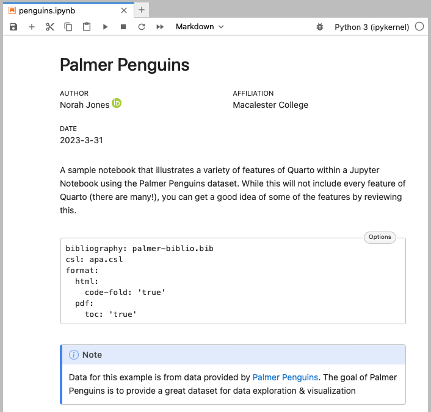

What’s new in ?
Charlotte Wickham
Developer Educator @ Posit
A Guide to Quarto Versions
Current: https://quarto.org/docs/download/, reflected in docs, stable
Pre-release: https://quarto.org/docs/download/prerelease
Embed Outputs from Other Documents
Source Document
Destination Document
Embed Outputs from Other Documents
source.qmd
```{{r}}
#| label: fig-scatter
#| fig-cap: A scatterplot embedded from another .qmd document
#| warning: false
ggplot(penguins,
aes(x = flipper_length_mm, y = bill_length_mm)) +
geom_point(aes(color = species, shape = species)) +
scale_color_manual(values = c("darkorange","purple","cyan4")) +
labs(
title = "Flipper and bill length",
subtitle = "Dimensions for penguins at Palmer Station LTER",
x = "Flipper length (mm)", y = "Bill length (mm)",
color = "Penguin species", shape = "Penguin species"
) +
theme_minimal()
```Embed Outputs from Other Documents
Embed from Jupyter Notebooks (.ipynb) v1.3 or,
Quarto documents (.qmd) v1.4
Cross Reference Anything
Reference-able Content
Figure 1 shows …
Cross Reference Anything
Figure 2 shows …
Cross Reference Anything

Table 1 shows …
Cross Reference Anything
Cross Reference Anything
Diagram 1 shows …
Inline Execution for Jupyter
Inline Execution for Jupyter
Inline Execution for Jupyter
Add Context to Code
Add Context to Code
Add the where with the filename attribute (v1.2)
Add Context to Code
Add line context with the code annotation (v1.3)
Projects
Create Projects Quickly
Create Projects Quickly
Generate Variations with Project Profiles
external/report.html
Generate Variations with Project Profiles
Create a new profile, by creating a new Quarto config file.
internal/report.html
Generate Variations with Project Profiles
Create a new profile, by creating a new Quarto config file.
internal/report.html
Generate Variations with Project Profiles
Generate Variations with Project Profiles
Generate Variations with Project Profiles
external/report.html
internal/report.html
Tools
Visual Studio Code Extension
Now has a Visual Editor
JupyterLab Extension

Interprets Quarto markdown
Wrapping Up
Other features in 1.4
Manuscripts for scholarly writing
Typst an alternative to LaTeX
Keeping Up to Date
Keeping Up to Date
Changelogs

Keeping Up to Date

Keeping Up to Date